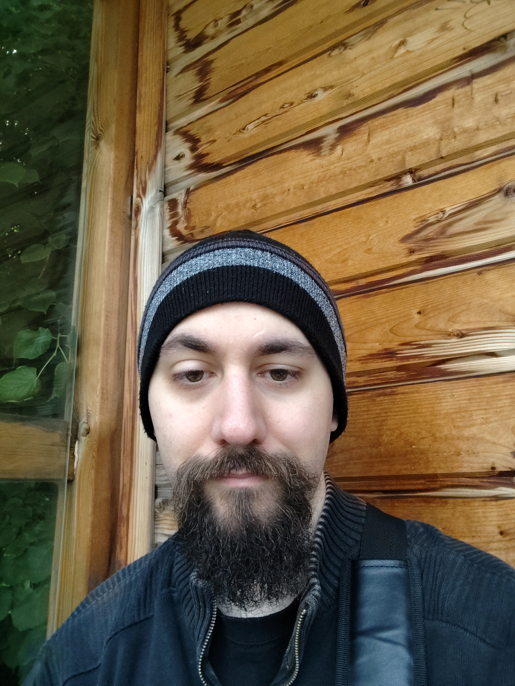

Je m'appelle Vigneron Tristan, j'ai 30 ans et je suis originaire de Montpellier, dans le sud de la France. J'ai déménagé en Auvergne il y a une dizaine d'années, et plus récemment, autour de Clermont-Ferrand.
Je suis passionné par la pâtisserie, les jeux vidéo, les JdR, la peinture, l'informatique et bien entendu le développement.
Quand je ne consacre pas une partie de mon temps libre à la veille technologique, je passe mon temps à mes divers hobbies.